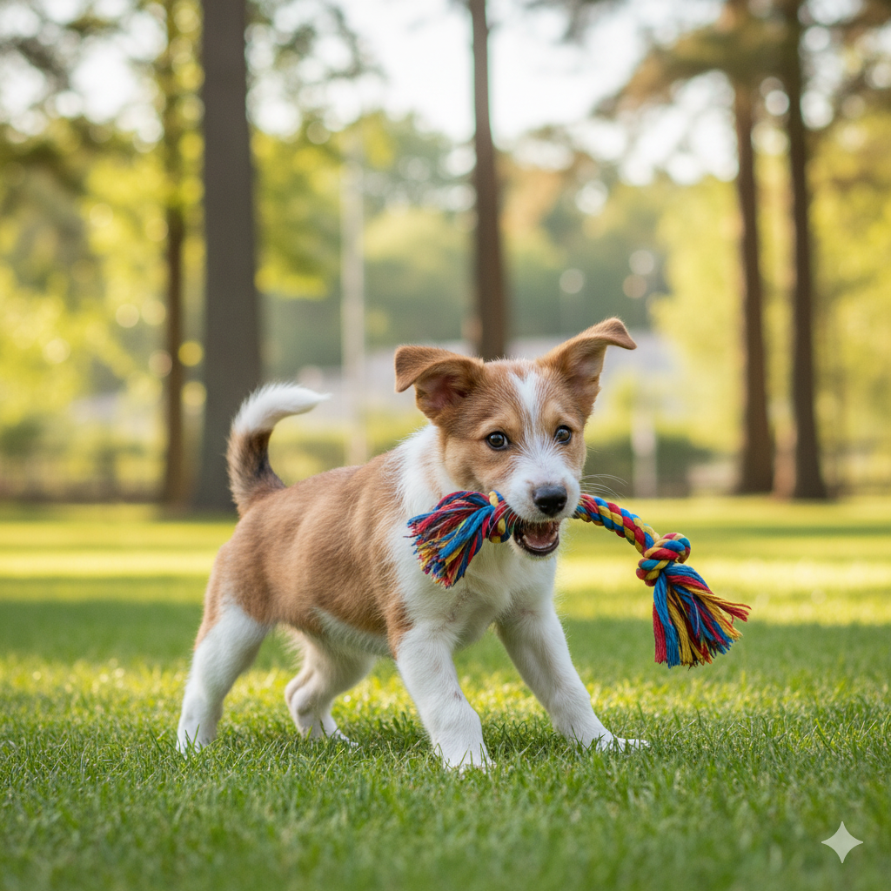
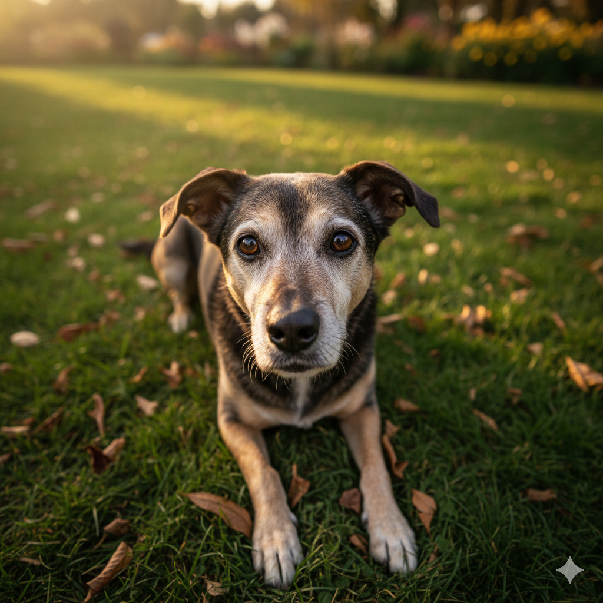

Quem somos
Somos uma organização não governamental sem fins lucrativos com o objetivo de resgatar e dar uma vida digna e cheia de amor para nossos AUmigos peludos em situações de vulnerabiliudade extrema.
Nossos Serviços
- Somos responsáveis por resgatar animais em situações de rua ou abandono;
- Nós nos comprometemos a oferecer todos os cuidados veterinários necessários e reabilitar nosso amigos peludos para conhecer sua nova família;
- Fazemos todo o acompanhamento necessário para que seja feita uma adoção extremamente responsável;
- Campanhas de conscientização sobre a importância da adoção e cuidados com os animais;
- Junto ao governo oferecemos programas de castração para controle populacional;
Adote um AUmigo
Fiapo de manga
3 anos | SRD
Modelo
2 anos | SRD

Bebê
4 meses | SRD

Velhinho
10 anos | SRD

Black
5 anos | SRD